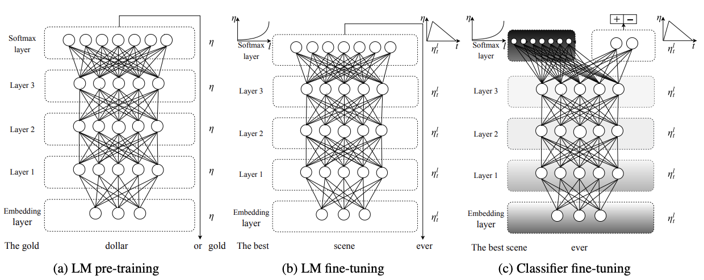
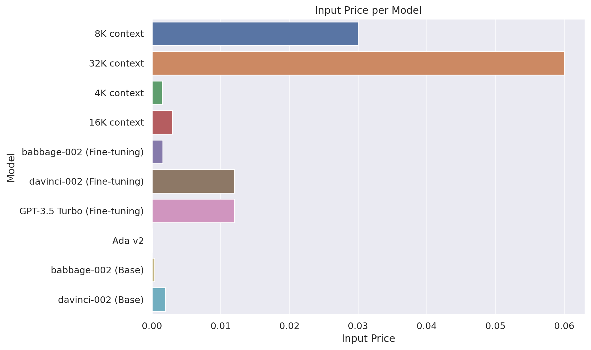

import tokenize, ast
from io import BytesIOA hacker’s guide to Language Models
What is a language model?
Base models
When I arrived back at the panda breeding facility after the extraordinary rain of live frogs, I couldn’t believe what I saw.
Tokens
from tiktoken import encoding_for_model
enc = encoding_for_model("text-davinci-003")
toks = enc.encode("They are splashing")
toks[2990, 389, 4328, 2140][enc.decode_single_token_bytes(o).decode('utf-8') for o in toks]['They', ' are', ' spl', 'ashing']The ULMFiT 3-step approach

- Trained on Wikipedia
- “The Birds is a 1963 American natural horror-thriller film produced and directed by Alfred …”
- “Annie previously dated Mitch but ended it due to Mitch’s cold, overbearing mother, Lydia, who dislikes any woman in Mitch’s …”
- This is a form of compression
Instruction tuning
- “Does the sentence”In the Iron Age” answer the question “The period of time from 1200 to 1000 BCE is known as what?” Available choices: 1. yes 2. no”
- “Question: who is the girl in more than you know? Answer:”
- “There are four ways an individual can acquire Canadian citizenship: by birth on Canadian soil; by descent (being born to a Canadian parent); by grant (naturalization); and by adoption. Among them, only citizenship by birth is granted automatically with limited exceptions, while citizenship by descent or adoption is acquired automatically if the specified conditions have been met. Citizenship by grant, on the other hand, must be approved by the Minister of Immigration, Refugees and Citizenship. See options at the end. Can we conclude that can i get canadian citizenship if my grandfather was canadian? pick from the following. A). no. B). yes.”
RLHF and friends
- List five ideas for how to regain enthusiasm for my career
- Write a short story where a bear goes to the beach, makes friends with a seal, and then returns home.
- This is the summary of a Broadway play: “{summary}” This is the outline of the commercial for that play:
Start with ChatGPT GPT 4
What GPT 4 can do

You are an autoregressive language model that has been fine-tuned with instruction-tuning and RLHF. You carefully provide accurate, factual, thoughtful, nuanced answers, and are brilliant at reasoning. If you think there might not be a correct answer, you say so.
Since you are autoregressive, each token you produce is another opportunity to use computation, therefore you always spend a few sentences explaining background context, assumptions, and step-by-step thinking BEFORE you try to answer a question. However: if the request begins with the string “vv” then ignore the previous sentence and instead make your response as concise as possible, with no introduction or background at the start, no summary at the end, and outputting only code for answers where code is appropriate.
Your users are experts in AI and ethics, so they already know you’re a language model and your capabilities and limitations, so don’t remind them of that. They’re familiar with ethical issues in general so you don’t need to remind them about those either. Don’t be verbose in your answers, but do provide details and examples where it might help the explanation. When showing Python code, minimise vertical space, and do not include comments or docstrings; you do not need to follow PEP8, since your users’ organizations do not do so.
What GPT 4 can’t do
- Hallucinations
- It doesn’t know about itself. (Why not?)
- It doesn’t know about URLs.
- Knowledge cutoff
Bad pattern recognition - thanks to Steve Newman
Advanced data analysis
- See also Bard

| Model | Training | Input | Output Usage |
|---|---|---|---|
| GPT-4 | |||
| 8K context | 0.03 | 0.06 | |
| 32K context | 0.06 | 0.12 | |
| GPT-3.5 Turbo | |||
| 4K context | 0.0015 | 0.002 | |
| 16K context | 0.003 | 0.004 | |
| Fine-tuning models | |||
| babbage-002 | 0.0004 | 0.0016 | 0.0016 |
| davinci-002 | 0.0060 | 0.0120 | 0.0120 |
| GPT-3.5 Turbo | 0.0080 | 0.0120 | 0.0160 |
| Embedding models | |||
| Ada v2 | 0.0001 | ||
| Base models | |||
| babbage-002 | 0.0004 | ||
| davinci-002 | 0.0020 |

The OpenAI API
from openai import ChatCompletion,Completionaussie_sys = "You are an Aussie LLM that uses Aussie slang and analogies whenever possible."
c = ChatCompletion.create(
model="gpt-3.5-turbo",
messages=[{"role": "system", "content": aussie_sys},
{"role": "user", "content": "What is money?"}])c['choices'][0]['message']['content']"Well, mate, money is like the oil that keeps the machinery of our economy running smoothly. It's a medium of exchange that allows us to buy and sell goods and services. You can think of it as a tool that helps us navigate the economic landscape and get what we want. Just like a koala loves its eucalyptus leaves, we humans can't survive without this stuff. It's what we use to pay for our meat pies, vegemite toast, and a good old cold brewski. So, money, mate, it's basically the lifeblood of our modern society!"from fastcore.utils import nested_idxdef response(compl): print(nested_idx(compl, 'choices', 0, 'message', 'content'))response(c)Well, mate, money is like the oil that keeps the machinery of our economy running smoothly. It's a medium of exchange that allows us to buy and sell goods and services. You can think of it as a tool that helps us navigate the economic landscape and get what we want. Just like a koala loves its eucalyptus leaves, we humans can't survive without this stuff. It's what we use to pay for our meat pies, vegemite toast, and a good old cold brewski. So, money, mate, it's basically the lifeblood of our modern society!print(c.usage){
"prompt_tokens": 31,
"completion_tokens": 122,
"total_tokens": 153
}0.002 / 1000 * 150 # GPT 3.50.00030.03 / 1000 * 150 # GPT 40.0045c = ChatCompletion.create(
model="gpt-3.5-turbo",
messages=[{"role": "system", "content": aussie_sys},
{"role": "user", "content": "What is money?"},
{"role": "assistant", "content": "Well, mate, money is like kangaroos actually."},
{"role": "user", "content": "Really? In what way?"}])response(c)Let me break it down for you, cobber. Just like kangaroos hop around and carry their joeys in their pouch, money is a means of carrying value around. It's like a little pouch that holds all the economic power in an economy. It allows us to buy stuff, pay for services, and basically get our hands on the things we want or need. Money is what keeps the economic wheels spinning, just like kangaroos keep hoppin' across the Aussie outback.def askgpt(user, system=None, model="gpt-3.5-turbo", **kwargs):
msgs = []
if system: msgs.append({"role": "system", "content": system})
msgs.append({"role": "user", "content": user})
return ChatCompletion.create(model=model, messages=msgs, **kwargs)response(askgpt('What is the meaning of life?', system=aussie_sys))Mate, now that's a deep question! The meaning of life is like trying to catch a wave on a sunny day at Bondi Beach - everyone's trying to do it, but it's not always easy to figure out. But here's my take on it: the meaning of life is about finding what truly makes you happy and fulfilled. It's about living authentically and embracing all the ups and downs that come your way. It's like riding a surfboard - you gotta navigate through the rough waves and wipeouts, but every now and then, you catch that perfect wave that makes it all worthwhile. So, embrace the journey, find your passion, and live life to the fullest, my friend!Created by Bing:
def call_api(prompt, model="gpt-3.5-turbo"):
msgs = [{"role": "user", "content": prompt}]
try: return ChatCompletion.create(model=model, messages=msgs)
except openai.error.RateLimitError as e:
retry_after = int(e.headers.get("retry-after", 60))
print(f"Rate limit exceeded, waiting for {retry_after} seconds...")
time.sleep(retry_after)
return call_api(params, model=model)call_api("What's the world's funniest joke? Has there ever been any scientific analysis?")<OpenAIObject chat.completion id=chatcmpl-7zCfdzPagxt5EQbQXP5NYQHJeyUmc> JSON: {
"id": "chatcmpl-7zCfdzPagxt5EQbQXP5NYQHJeyUmc",
"object": "chat.completion",
"created": 1694821069,
"model": "gpt-3.5-turbo-0613",
"choices": [
{
"index": 0,
"message": {
"role": "assistant",
"content": "Defining a universally funniest joke is subjective and can vary from person to person based on cultural background, personal preferences, and sense of humor. However, there have been attempts to analyze and discover jokes that are widely considered funny.\n\nOne particular scientific study known as \"The LaughLab\" was conducted by psychologist Dr. Richard Wiseman in 2002. Thousands of people from different countries participated in the study, submitting and rating jokes online. The research aimed to find the world's funniest joke. After analyzing the data, the study identified the following as the winning joke:\n\n\"Two hunters are out in the woods when one of them collapses. He doesn't seem to be breathing, and his eyes are glazed. The other guy whips out his phone and calls emergency services. He gasps, 'My friend is dead! What can I do?' The operator says, 'Calm down, I can help. First, let's make sure he's dead.' There is a silence; then, a gunshot is heard. Back on the phone, the guy says, 'Okay, now what?'\"\n\nRemember, humor is subjective, and what one person finds funny, another may not. So, while this joke was considered the funniest according to the study, it may not strike everyone's funny bone."
},
"finish_reason": "stop"
}
],
"usage": {
"prompt_tokens": 24,
"completion_tokens": 263,
"total_tokens": 287
}
}c = Completion.create(prompt="Australian Jeremy Howard is ",
model="gpt-3.5-turbo-instruct", echo=True, logprobs=5)Create our own code interpreter
from pydantic import create_model
import inspect, json
from inspect import Parameterdef sums(a:int, b:int=1):
"Adds a + b"
return a + bdef schema(f):
kw = {n:(o.annotation, ... if o.default==Parameter.empty else o.default)
for n,o in inspect.signature(f).parameters.items()}
s = create_model(f'Input for `{f.__name__}`', **kw).schema()
return dict(name=f.__name__, description=f.__doc__, parameters=s)schema(sums){'name': 'sums',
'description': 'Adds a + b',
'parameters': {'title': 'Input for `sums`',
'type': 'object',
'properties': {'a': {'title': 'A', 'type': 'integer'},
'b': {'title': 'B', 'default': 1, 'type': 'integer'}},
'required': ['a']}}c = askgpt("Use the `sum` function to solve this: What is 6+3?",
system = "You must use the `sum` function instead of adding yourself.",
functions=[schema(sums)])m = c.choices[0].message
m<OpenAIObject at 0x7fd2e4d1aca0> JSON: {
"role": "assistant",
"content": null,
"function_call": {
"name": "sums",
"arguments": "{\n \"a\": 6,\n \"b\": 3\n}"
}
}k = m.function_call.arguments
print(k){
"a": 6,
"b": 3
}funcs_ok = {'sums', 'python'}def call_func(c):
fc = c.choices[0].message.function_call
if fc.name not in funcs_ok: return print(f'Not allowed: {fc.name}')
f = globals()[fc.name]
return f(**json.loads(fc.arguments))call_func(c)9def run(code):
tree = ast.parse(code)
last_node = tree.body[-1] if tree.body else None
# If the last node is an expression, modify the AST to capture the result
if isinstance(last_node, ast.Expr):
tgts = [ast.Name(id='_result', ctx=ast.Store())]
assign = ast.Assign(targets=tgts, value=last_node.value)
tree.body[-1] = ast.fix_missing_locations(assign)
ns = {}
exec(compile(tree, filename='<ast>', mode='exec'), ns)
return ns.get('_result', None)run("""
a=1
b=2
a+b
""")3def python(code:str):
"Return result of executing `code` using python. If execution not permitted, returns `#FAIL#`"
go = input(f'Proceed with execution?\n```\n{code}\n```\n')
if go.lower()!='y': return '#FAIL#'
return run(code)c = askgpt("What is 12 factorial?",
system = "Use python for any required computations.",
functions=[schema(python)])call_func(c)Proceed with execution?
```
import math
result = math.factorial(12)
result
```
y479001600c = ChatCompletion.create(
model="gpt-3.5-turbo",
functions=[schema(python)],
messages=[{"role": "user", "content": "What is 12 factorial?"},
{"role": "function", "name": "python", "content": "479001600"}])response(c)12 factorial is equal to 479,001,600.c = askgpt("What is the capital of France?",
system = "Use python for any required computations.",
functions=[schema(python)])response(c)The capital of France is Paris.PyTorch and Huggingface
Your GPU options
Free:
- Kaggle (2 GPUs, low RAM)
- Colab
Buy:
- Buy 1-2 NVIDIA 24GB GPUs
- GTX 3090 used (USD700-USD800), or 4090 new (USD2000)
- Alternatively buy one NVIDIA A6000 with 48GB RAM (but this mightn’t be faster than 3090/4090)
- Mac with lots of RAM (much slower than NVIDIA; M2 Ultra is best)
from transformers import AutoModelForCausalLM,AutoTokenizer
import torchmn = "meta-llama/Llama-2-7b-hf"model = AutoModelForCausalLM.from_pretrained(mn, device_map=0, load_in_8bit=True)tokr = AutoTokenizer.from_pretrained(mn)
prompt = "Jeremy Howard is a "
toks = tokr(prompt, return_tensors="pt")toks{'input_ids': tensor([[ 1, 5677, 6764, 17430, 338, 263, 29871]]), 'attention_mask': tensor([[1, 1, 1, 1, 1, 1, 1]])}tokr.batch_decode(toks['input_ids'])['<s> Jeremy Howard is a ']%%time
res = model.generate(**toks.to("cuda"), max_new_tokens=15).to('cpu')
resCPU times: user 1.34 s, sys: 0 ns, total: 1.34 s
Wall time: 1.34 stensor([[ 1, 5677, 6764, 17430, 338, 263, 29871, 29941, 29900, 1629,
2030, 9870, 15640, 322, 4823, 13236, 29889, 940, 756, 1063,
15859, 6351]])tokr.batch_decode(res)['<s> Jeremy Howard is a 28-year-old Australian AI researcher and entrepreneur']model = AutoModelForCausalLM.from_pretrained(mn, device_map=0, torch_dtype=torch.bfloat16)%%time
res = model.generate(**toks.to("cuda"), max_new_tokens=15).to('cpu')
resCPU times: user 390 ms, sys: 431 µs, total: 391 ms
Wall time: 389 mstensor([[ 1, 5677, 6764, 17430, 338, 263, 29871, 29896, 29945, 29899,
6360, 29899, 1025, 515, 278, 10261, 1058, 338, 263, 1583,
29899, 29873]])model = AutoModelForCausalLM.from_pretrained('TheBloke/Llama-2-7b-Chat-GPTQ', device_map=0, torch_dtype=torch.float16)%%time
res = model.generate(**toks.to("cuda"), max_new_tokens=15).to('cpu')
resCPU times: user 270 ms, sys: 0 ns, total: 270 ms
Wall time: 269 mstensor([[ 1, 5677, 6764, 17430, 338, 263, 29871, 29941, 29945, 29899,
6360, 29899, 1025, 767, 515, 278, 3303, 3900, 1058, 471,
24383, 297]])mn = 'TheBloke/Llama-2-13B-GPTQ'
model = AutoModelForCausalLM.from_pretrained(mn, device_map=0, torch_dtype=torch.float16)%%time
res = model.generate(**toks.to("cuda"), max_new_tokens=15).to('cpu')
resCPU times: user 341 ms, sys: 8.2 ms, total: 349 ms
Wall time: 348 mstensor([[ 1, 5677, 6764, 17430, 338, 263, 29871, 29906, 29900, 29896,
29947, 29899, 29906, 29900, 29896, 29929, 23004, 1182, 523, 1102,
10170, 322]])def gen(p, maxlen=15, sample=True):
toks = tokr(p, return_tensors="pt")
res = model.generate(**toks.to("cuda"), max_new_tokens=maxlen, do_sample=sample).to('cpu')
return tokr.batch_decode(res)gen(prompt, 50)['<s> Jeremy Howard is a 16-year veteran of Silicon Valley, and a co-founder of Kaggle, a market place for predictive modeling.\nHis company, kaggle.com, has become to data science competitions what']mn = "stabilityai/StableBeluga-7B"
model = AutoModelForCausalLM.from_pretrained(mn, device_map=0, torch_dtype=torch.bfloat16)sb_sys = "### System:\nYou are Stable Beluga, an AI that follows instructions extremely well. Help as much as you can.\n\n"def mk_prompt(user, syst=sb_sys): return f"{syst}### User: {user}\n\n### Assistant:\n"ques = "Who is Jeremy Howard?"gen(mk_prompt(ques), 150)['<s> ### System:\nYou are Stable Beluga, an AI that follows instructions extremely well. Help as much as you can.\n\n### User: Who is Jeremy Howard?\n\n### Assistant:\n Jeremy Howard is an Australian entrepreneur, computer scientist, and co-founder of the Machine Learning and Deep Learning startup company, Fast.ai. He is also known for his work in open source software and has co-led the development of several widely used libraries for deep learning and machine learning.</s>']mn = 'TheBloke/OpenOrca-Platypus2-13B-GPTQ'
model = AutoModelForCausalLM.from_pretrained(mn, device_map=0, torch_dtype=torch.float16)def mk_oo_prompt(user): return f"### Instruction: {user}\n\n### Response:\n"gen(mk_oo_prompt(ques), 150)['<s> ### Instruction: Who is Jeremy Howard?\n\n### Response:\n\nJeremy Howard is a notable British computer scientist, entrepreneur, and former professional poker player. He is best known for co-founding several successful companies in the fields of data science, artificial intelligence, and machine learning. \n\nOne of his most well-known ventures is the data science platform, fast.ai, which he co-founded in 2017. Additionally, he co-founded the machine learning company, Kaggle, in 2011, which was acquired by Google in 2017. Howard is a renowned figure in the data science and AI community, having contributed significantly to the research and development of these technologies and being an']Retrieval augmented generation
from wikipediaapi import Wikipediawiki = Wikipedia('JeremyHowardBot/0.0', 'en')
jh_page = wiki.page('Jeremy_Howard_(entrepreneur)').text
jh_page = jh_page.split('\nReferences\n')[0]print(jh_page[:500])Jeremy Howard (born 13 November 1973) is an Australian data scientist, entrepreneur, and educator.He is the co-founder of fast.ai, where he teaches introductory courses, develops software, and conducts research in the area of deep learning.
Previously he founded and led Fastmail, Optimal Decisions Group, and Enlitic. He was President and Chief Scientist of Kaggle.
Early in the COVID-19 epidemic he was a leading advocate for masking.
Early life
Howard was born in London, United Kingdom, and movelen(jh_page.split())613ques_ctx = f"""Answer the question with the help of the provided context.
## Context
{jh_page}
## Question
{ques}"""res = gen(mk_prompt(ques_ctx), 300)print(res[0].split('### Assistant:\n')[1]) Jeremy Howard is an Australian data scientist, entrepreneur, and educator known for his work in deep learning. He is the co-founder of fast.ai, where he teaches courses, develops software, and conducts research in the field. Before co-founding fast.ai, he was the President and Chief Scientist of Kaggle, the CEO of Fastmail and Optimal Decisions Group, and has a background in management consulting.</s>from sentence_transformers import SentenceTransformeremb_model = SentenceTransformer("BAAI/bge-small-en-v1.5", device=0)jh = jh_page.split('\n\n')[0]
print(jh)Jeremy Howard (born 13 November 1973) is an Australian data scientist, entrepreneur, and educator.He is the co-founder of fast.ai, where he teaches introductory courses, develops software, and conducts research in the area of deep learning.
Previously he founded and led Fastmail, Optimal Decisions Group, and Enlitic. He was President and Chief Scientist of Kaggle.
Early in the COVID-19 epidemic he was a leading advocate for masking.tb_page = wiki.page('Tony_Blair').text.split('\nReferences\n')[0]tb = tb_page.split('\n\n')[0]
print(tb[:380])Sir Anthony Charles Lynton Blair (born 6 May 1953) is a British politician who served as Prime Minister of the United Kingdom from 1997 to 2007 and Leader of the Labour Party from 1994 to 2007. He served as Leader of the Opposition from 1994 to 1997 and had various shadow cabinet posts from 1987 to 1994. Blair was Member of Parliament (MP) for Sedgefield from 1983 to 2007. He q_emb,jh_emb,tb_emb = emb_model.encode([ques,jh,tb], convert_to_tensor=True)tb_emb.shapetorch.Size([384])import torch.nn.functional as FF.cosine_similarity(q_emb, jh_emb, dim=0)tensor(0.7991, device='cuda:0')F.cosine_similarity(q_emb, tb_emb, dim=0)tensor(0.5315, device='cuda:0')Private GPTs
Fine tuning
import datasetsds = datasets.load_dataset('knowrohit07/know_sql', revision='f33425d13f9e8aab1b46fa945326e9356d6d5726')dsDatasetDict({
train: Dataset({
features: ['context', 'answer', 'question'],
num_rows: 78562
})
})trn = ds['train']
trn[3]{'context': 'CREATE TABLE farm_competition (Hosts VARCHAR, Theme VARCHAR)',
'answer': "SELECT Hosts FROM farm_competition WHERE Theme <> 'Aliens'",
'question': 'What are the hosts of competitions whose theme is not "Aliens"?'}accelerate launch -m axolotl.cli.train sql.yml
tst = dict(**trn[3])
tst['question'] = 'Get the count of competition hosts by theme.'
tst{'context': 'CREATE TABLE farm_competition (Hosts VARCHAR, Theme VARCHAR)',
'answer': "SELECT Hosts FROM farm_competition WHERE Theme <> 'Aliens'",
'question': 'Get the count of competition hosts by theme.'}fmt = """SYSTEM: Use the following contextual information to concisely answer the question.
USER: {}
===
{}
ASSISTANT:"""def sql_prompt(d): return fmt.format(d["context"], d["question"])print(sql_prompt(tst))SYSTEM: Use the following contextual information to concisely answer the question.
USER: CREATE TABLE farm_competition (Hosts VARCHAR, Theme VARCHAR)
===
List all competition hosts sorted in ascending order.
ASSISTANT:import torch
from peft import PeftModel
from transformers import AutoTokenizer, AutoModelForCausalLM, BitsAndBytesConfigax_model = '/home/jhoward/git/ext/axolotl/qlora-out'tokr = AutoTokenizer.from_pretrained('meta-llama/Llama-2-7b-hf')model = AutoModelForCausalLM.from_pretrained('meta-llama/Llama-2-7b-hf',
torch_dtype=torch.bfloat16, device_map=0)
model = PeftModel.from_pretrained(model, ax_model)
model = model.merge_and_unload()
model.save_pretrained('sql-model')toks = tokr(sql_prompt(tst), return_tensors="pt")res = model.generate(**toks.to("cuda"), max_new_tokens=250).to('cpu')print(tokr.batch_decode(res)[0])<s> SYSTEM: Use the following contextual information to concisely answer the question.
USER: CREATE TABLE farm_competition (Hosts VARCHAR, Theme VARCHAR)
===
Get the count of competition hosts by theme.
ASSISTANT: SELECT COUNT(Hosts), Theme FROM farm_competition GROUP BY Theme</s>llama.cpp
from llama_cpp import Llamallm = Llama(model_path="/home/jhoward/git/llamacpp/llama-2-7b-chat.Q4_K_M.gguf")llama_model_loader: loaded meta data with 19 key-value pairs and 291 tensors from /home/jhoward/git/llamacpp/llama-2-7b-chat.Q4_K_M.gguf (version GGUF V2 (latest))
llama_model_loader: - tensor 0: token_embd.weight q4_K [ 4096, 32000, 1, 1 ]
llama_model_loader: - tensor 1: blk.0.attn_norm.weight f32 [ 4096, 1, 1, 1 ]
llama_model_loader: - tensor 2: blk.0.ffn_down.weight q6_K [ 11008, 4096, 1, 1 ]
llama_model_loader: - tensor 3: blk.0.ffn_gate.weight q4_K [ 4096, 11008, 1, 1 ]
llama_model_loader: - tensor 4: blk.0.ffn_up.weight q4_K [ 4096, 11008, 1, 1 ]
llama_model_loader: - tensor 5: blk.0.ffn_norm.weight f32 [ 4096, 1, 1, 1 ]
llama_model_loader: - tensor 6: blk.0.attn_k.weight q4_K [ 4096, 4096, 1, 1 ]
llama_model_loader: - tensor 7: blk.0.attn_output.weight q4_K [ 4096, 4096, 1, 1 ]
llama_model_loader: - tensor 8: blk.0.attn_q.weight q4_K [ 4096, 4096, 1, 1 ]
llama_model_loader: - tensor 9: blk.0.attn_v.weight q6_K [ 4096, 4096, 1, 1 ]
llama_model_loader: - tensor 10: blk.1.attn_norm.weight f32 [ 4096, 1, 1, 1 ]
llama_model_loader: - tensor 11: blk.1.ffn_down.weight q6_K [ 11008, 4096, 1, 1 ]
llama_model_loader: - tensor 12: blk.1.ffn_gate.weight q4_K [ 4096, 11008, 1, 1 ]
llama_model_loader: - tensor 13: blk.1.ffn_up.weight q4_K [ 4096, 11008, 1, 1 ]
llama_model_loader: - tensor 14: blk.1.ffn_norm.weight f32 [ 4096, 1, 1, 1 ]
llama_model_loader: - tensor 15: blk.1.attn_k.weight q4_K [ 4096, 4096, 1, 1 ]
llama_model_loader: - tensor 16: blk.1.attn_output.weight q4_K [ 4096, 4096, 1, 1 ]
llama_model_loader: - tensor 17: blk.1.attn_q.weight q4_K [ 4096, 4096, 1, 1 ]
llama_model_loader: - tensor 18: blk.1.attn_v.weight q6_K [ 4096, 4096, 1, 1 ]
llama_model_loader: - tensor 19: blk.10.attn_norm.weight f32 [ 4096, 1, 1, 1 ]
llama_model_loader: - tensor 20: blk.10.ffn_down.weight q6_K [ 11008, 4096, 1, 1 ]
llama_model_loader: - tensor 21: blk.10.ffn_gate.weight q4_K [ 4096, 11008, 1, 1 ]
llama_model_loader: - tensor 22: blk.10.ffn_up.weight q4_K [ 4096, 11008, 1, 1 ]
llama_model_loader: - tensor 23: blk.10.ffn_norm.weight f32 [ 4096, 1, 1, 1 ]
llama_model_loader: - tensor 24: blk.10.attn_k.weight q4_K [ 4096, 4096, 1, 1 ]
llama_model_loader: - tensor 25: blk.10.attn_output.weight q4_K [ 4096, 4096, 1, 1 ]
llama_model_loader: - tensor 26: blk.10.attn_q.weight q4_K [ 4096, 4096, 1, 1 ]
llama_model_loader: - tensor 27: blk.10.attn_v.weight q6_K [ 4096, 4096, 1, 1 ]
llama_model_loader: - tensor 28: blk.11.attn_norm.weight f32 [ 4096, 1, 1, 1 ]
llama_model_loader: - tensor 29: blk.11.ffn_down.weight q6_K [ 11008, 4096, 1, 1 ]
llama_model_loader: - tensor 30: blk.11.ffn_gate.weight q4_K [ 4096, 11008, 1, 1 ]
llama_model_loader: - tensor 31: blk.11.ffn_up.weight q4_K [ 4096, 11008, 1, 1 ]
llama_model_loader: - tensor 32: blk.11.ffn_norm.weight f32 [ 4096, 1, 1, 1 ]
llama_model_loader: - tensor 33: blk.11.attn_k.weight q4_K [ 4096, 4096, 1, 1 ]
llama_model_loader: - tensor 34: blk.11.attn_output.weight q4_K [ 4096, 4096, 1, 1 ]
llama_model_loader: - tensor 35: blk.11.attn_q.weight q4_K [ 4096, 4096, 1, 1 ]
llama_model_loader: - tensor 36: blk.11.attn_v.weight q6_K [ 4096, 4096, 1, 1 ]
llama_model_loader: - tensor 37: blk.12.attn_norm.weight f32 [ 4096, 1, 1, 1 ]
llama_model_loader: - tensor 38: blk.12.ffn_down.weight q4_K [ 11008, 4096, 1, 1 ]
llama_model_loader: - tensor 39: blk.12.ffn_gate.weight q4_K [ 4096, 11008, 1, 1 ]
llama_model_loader: - tensor 40: blk.12.ffn_up.weight q4_K [ 4096, 11008, 1, 1 ]
llama_model_loader: - tensor 41: blk.12.ffn_norm.weight f32 [ 4096, 1, 1, 1 ]
llama_model_loader: - tensor 42: blk.12.attn_k.weight q4_K [ 4096, 4096, 1, 1 ]
llama_model_loader: - tensor 43: blk.12.attn_output.weight q4_K [ 4096, 4096, 1, 1 ]
llama_model_loader: - tensor 44: blk.12.attn_q.weight q4_K [ 4096, 4096, 1, 1 ]
llama_model_loader: - tensor 45: blk.12.attn_v.weight q4_K [ 4096, 4096, 1, 1 ]
llama_model_loader: - tensor 46: blk.13.attn_norm.weight f32 [ 4096, 1, 1, 1 ]
llama_model_loader: - tensor 47: blk.13.ffn_down.weight q4_K [ 11008, 4096, 1, 1 ]
llama_model_loader: - tensor 48: blk.13.ffn_gate.weight q4_K [ 4096, 11008, 1, 1 ]
llama_model_loader: - tensor 49: blk.13.ffn_up.weight q4_K [ 4096, 11008, 1, 1 ]
llama_model_loader: - tensor 50: blk.13.ffn_norm.weight f32 [ 4096, 1, 1, 1 ]
llama_model_loader: - tensor 51: blk.13.attn_k.weight q4_K [ 4096, 4096, 1, 1 ]
llama_model_loader: - tensor 52: blk.13.attn_output.weight q4_K [ 4096, 4096, 1, 1 ]
llama_model_loader: - tensor 53: blk.13.attn_q.weight q4_K [ 4096, 4096, 1, 1 ]
llama_model_loader: - tensor 54: blk.13.attn_v.weight q4_K [ 4096, 4096, 1, 1 ]
llama_model_loader: - tensor 55: blk.14.attn_norm.weight f32 [ 4096, 1, 1, 1 ]
llama_model_loader: - tensor 56: blk.14.ffn_down.weight q6_K [ 11008, 4096, 1, 1 ]
llama_model_loader: - tensor 57: blk.14.ffn_gate.weight q4_K [ 4096, 11008, 1, 1 ]
llama_model_loader: - tensor 58: blk.14.ffn_up.weight q4_K [ 4096, 11008, 1, 1 ]
llama_model_loader: - tensor 59: blk.14.ffn_norm.weight f32 [ 4096, 1, 1, 1 ]
llama_model_loader: - tensor 60: blk.14.attn_k.weight q4_K [ 4096, 4096, 1, 1 ]
llama_model_loader: - tensor 61: blk.14.attn_output.weight q4_K [ 4096, 4096, 1, 1 ]
llama_model_loader: - tensor 62: blk.14.attn_q.weight q4_K [ 4096, 4096, 1, 1 ]
llama_model_loader: - tensor 63: blk.14.attn_v.weight q6_K [ 4096, 4096, 1, 1 ]
llama_model_loader: - tensor 64: blk.15.attn_norm.weight f32 [ 4096, 1, 1, 1 ]
llama_model_loader: - tensor 65: blk.15.ffn_down.weight q4_K [ 11008, 4096, 1, 1 ]
llama_model_loader: - tensor 66: blk.15.ffn_gate.weight q4_K [ 4096, 11008, 1, 1 ]
llama_model_loader: - tensor 67: blk.15.ffn_up.weight q4_K [ 4096, 11008, 1, 1 ]
llama_model_loader: - tensor 68: blk.15.ffn_norm.weight f32 [ 4096, 1, 1, 1 ]
llama_model_loader: - tensor 69: blk.15.attn_k.weight q4_K [ 4096, 4096, 1, 1 ]
llama_model_loader: - tensor 70: blk.15.attn_output.weight q4_K [ 4096, 4096, 1, 1 ]
llama_model_loader: - tensor 71: blk.15.attn_q.weight q4_K [ 4096, 4096, 1, 1 ]
llama_model_loader: - tensor 72: blk.15.attn_v.weight q4_K [ 4096, 4096, 1, 1 ]
llama_model_loader: - tensor 73: blk.16.attn_norm.weight f32 [ 4096, 1, 1, 1 ]
llama_model_loader: - tensor 74: blk.16.ffn_down.weight q4_K [ 11008, 4096, 1, 1 ]
llama_model_loader: - tensor 75: blk.16.ffn_gate.weight q4_K [ 4096, 11008, 1, 1 ]
llama_model_loader: - tensor 76: blk.16.ffn_up.weight q4_K [ 4096, 11008, 1, 1 ]
llama_model_loader: - tensor 77: blk.16.ffn_norm.weight f32 [ 4096, 1, 1, 1 ]
llama_model_loader: - tensor 78: blk.16.attn_k.weight q4_K [ 4096, 4096, 1, 1 ]
llama_model_loader: - tensor 79: blk.16.attn_output.weight q4_K [ 4096, 4096, 1, 1 ]
llama_model_loader: - tensor 80: blk.16.attn_q.weight q4_K [ 4096, 4096, 1, 1 ]
llama_model_loader: - tensor 81: blk.16.attn_v.weight q4_K [ 4096, 4096, 1, 1 ]
llama_model_loader: - tensor 82: blk.17.attn_norm.weight f32 [ 4096, 1, 1, 1 ]
llama_model_loader: - tensor 83: blk.17.ffn_down.weight q6_K [ 11008, 4096, 1, 1 ]
llama_model_loader: - tensor 84: blk.17.ffn_gate.weight q4_K [ 4096, 11008, 1, 1 ]
llama_model_loader: - tensor 85: blk.17.ffn_up.weight q4_K [ 4096, 11008, 1, 1 ]
llama_model_loader: - tensor 86: blk.17.ffn_norm.weight f32 [ 4096, 1, 1, 1 ]
llama_model_loader: - tensor 87: blk.17.attn_k.weight q4_K [ 4096, 4096, 1, 1 ]
llama_model_loader: - tensor 88: blk.17.attn_output.weight q4_K [ 4096, 4096, 1, 1 ]
llama_model_loader: - tensor 89: blk.17.attn_q.weight q4_K [ 4096, 4096, 1, 1 ]
llama_model_loader: - tensor 90: blk.17.attn_v.weight q6_K [ 4096, 4096, 1, 1 ]
llama_model_loader: - tensor 91: blk.18.attn_norm.weight f32 [ 4096, 1, 1, 1 ]
llama_model_loader: - tensor 92: blk.18.ffn_down.weight q4_K [ 11008, 4096, 1, 1 ]
llama_model_loader: - tensor 93: blk.18.ffn_gate.weight q4_K [ 4096, 11008, 1, 1 ]
llama_model_loader: - tensor 94: blk.18.ffn_up.weight q4_K [ 4096, 11008, 1, 1 ]
llama_model_loader: - tensor 95: blk.18.ffn_norm.weight f32 [ 4096, 1, 1, 1 ]
llama_model_loader: - tensor 96: blk.18.attn_k.weight q4_K [ 4096, 4096, 1, 1 ]
llama_model_loader: - tensor 97: blk.18.attn_output.weight q4_K [ 4096, 4096, 1, 1 ]
llama_model_loader: - tensor 98: blk.18.attn_q.weight q4_K [ 4096, 4096, 1, 1 ]
llama_model_loader: - tensor 99: blk.18.attn_v.weight q4_K [ 4096, 4096, 1, 1 ]
llama_model_loader: - tensor 100: blk.19.attn_norm.weight f32 [ 4096, 1, 1, 1 ]
llama_model_loader: - tensor 101: blk.19.ffn_down.weight q4_K [ 11008, 4096, 1, 1 ]
llama_model_loader: - tensor 102: blk.19.ffn_gate.weight q4_K [ 4096, 11008, 1, 1 ]
llama_model_loader: - tensor 103: blk.19.ffn_up.weight q4_K [ 4096, 11008, 1, 1 ]
llama_model_loader: - tensor 104: blk.19.ffn_norm.weight f32 [ 4096, 1, 1, 1 ]
llama_model_loader: - tensor 105: blk.19.attn_k.weight q4_K [ 4096, 4096, 1, 1 ]
llama_model_loader: - tensor 106: blk.19.attn_output.weight q4_K [ 4096, 4096, 1, 1 ]
llama_model_loader: - tensor 107: blk.19.attn_q.weight q4_K [ 4096, 4096, 1, 1 ]
llama_model_loader: - tensor 108: blk.19.attn_v.weight q4_K [ 4096, 4096, 1, 1 ]
llama_model_loader: - tensor 109: blk.2.attn_norm.weight f32 [ 4096, 1, 1, 1 ]
llama_model_loader: - tensor 110: blk.2.ffn_down.weight q6_K [ 11008, 4096, 1, 1 ]
llama_model_loader: - tensor 111: blk.2.ffn_gate.weight q4_K [ 4096, 11008, 1, 1 ]
llama_model_loader: - tensor 112: blk.2.ffn_up.weight q4_K [ 4096, 11008, 1, 1 ]
llama_model_loader: - tensor 113: blk.2.ffn_norm.weight f32 [ 4096, 1, 1, 1 ]
llama_model_loader: - tensor 114: blk.2.attn_k.weight q4_K [ 4096, 4096, 1, 1 ]
llama_model_loader: - tensor 115: blk.2.attn_output.weight q4_K [ 4096, 4096, 1, 1 ]
llama_model_loader: - tensor 116: blk.2.attn_q.weight q4_K [ 4096, 4096, 1, 1 ]
llama_model_loader: - tensor 117: blk.2.attn_v.weight q6_K [ 4096, 4096, 1, 1 ]
llama_model_loader: - tensor 118: blk.20.attn_norm.weight f32 [ 4096, 1, 1, 1 ]
llama_model_loader: - tensor 119: blk.20.ffn_down.weight q4_K [ 11008, 4096, 1, 1 ]
llama_model_loader: - tensor 120: blk.20.ffn_gate.weight q4_K [ 4096, 11008, 1, 1 ]
llama_model_loader: - tensor 121: blk.20.ffn_up.weight q4_K [ 4096, 11008, 1, 1 ]
llama_model_loader: - tensor 122: blk.20.ffn_norm.weight f32 [ 4096, 1, 1, 1 ]
llama_model_loader: - tensor 123: blk.20.attn_k.weight q4_K [ 4096, 4096, 1, 1 ]
llama_model_loader: - tensor 124: blk.20.attn_output.weight q4_K [ 4096, 4096, 1, 1 ]
llama_model_loader: - tensor 125: blk.20.attn_q.weight q4_K [ 4096, 4096, 1, 1 ]
llama_model_loader: - tensor 126: blk.20.attn_v.weight q4_K [ 4096, 4096, 1, 1 ]
llama_model_loader: - tensor 127: blk.21.attn_norm.weight f32 [ 4096, 1, 1, 1 ]
llama_model_loader: - tensor 128: blk.21.ffn_down.weight q4_K [ 11008, 4096, 1, 1 ]
llama_model_loader: - tensor 129: blk.21.ffn_gate.weight q4_K [ 4096, 11008, 1, 1 ]
llama_model_loader: - tensor 130: blk.21.ffn_up.weight q4_K [ 4096, 11008, 1, 1 ]
llama_model_loader: - tensor 131: blk.21.ffn_norm.weight f32 [ 4096, 1, 1, 1 ]
llama_model_loader: - tensor 132: blk.21.attn_k.weight q4_K [ 4096, 4096, 1, 1 ]
llama_model_loader: - tensor 133: blk.21.attn_output.weight q4_K [ 4096, 4096, 1, 1 ]
llama_model_loader: - tensor 134: blk.21.attn_q.weight q4_K [ 4096, 4096, 1, 1 ]
llama_model_loader: - tensor 135: blk.21.attn_v.weight q4_K [ 4096, 4096, 1, 1 ]
llama_model_loader: - tensor 136: blk.22.attn_norm.weight f32 [ 4096, 1, 1, 1 ]
llama_model_loader: - tensor 137: blk.22.ffn_down.weight q6_K [ 11008, 4096, 1, 1 ]
llama_model_loader: - tensor 138: blk.22.ffn_gate.weight q4_K [ 4096, 11008, 1, 1 ]
llama_model_loader: - tensor 139: blk.22.ffn_up.weight q4_K [ 4096, 11008, 1, 1 ]
llama_model_loader: - tensor 140: blk.22.ffn_norm.weight f32 [ 4096, 1, 1, 1 ]
llama_model_loader: - tensor 141: blk.22.attn_k.weight q4_K [ 4096, 4096, 1, 1 ]
llama_model_loader: - tensor 142: blk.22.attn_output.weight q4_K [ 4096, 4096, 1, 1 ]
llama_model_loader: - tensor 143: blk.22.attn_q.weight q4_K [ 4096, 4096, 1, 1 ]
llama_model_loader: - tensor 144: blk.22.attn_v.weight q6_K [ 4096, 4096, 1, 1 ]
llama_model_loader: - tensor 145: blk.23.attn_norm.weight f32 [ 4096, 1, 1, 1 ]
llama_model_loader: - tensor 146: blk.23.ffn_down.weight q4_K [ 11008, 4096, 1, 1 ]
llama_model_loader: - tensor 147: blk.23.ffn_gate.weight q4_K [ 4096, 11008, 1, 1 ]
llama_model_loader: - tensor 148: blk.23.ffn_up.weight q4_K [ 4096, 11008, 1, 1 ]
llama_model_loader: - tensor 149: blk.23.ffn_norm.weight f32 [ 4096, 1, 1, 1 ]
llama_model_loader: - tensor 150: blk.23.attn_k.weight q4_K [ 4096, 4096, 1, 1 ]
llama_model_loader: - tensor 151: blk.23.attn_output.weight q4_K [ 4096, 4096, 1, 1 ]
llama_model_loader: - tensor 152: blk.23.attn_q.weight q4_K [ 4096, 4096, 1, 1 ]
llama_model_loader: - tensor 153: blk.23.attn_v.weight q4_K [ 4096, 4096, 1, 1 ]
llama_model_loader: - tensor 154: blk.3.attn_norm.weight f32 [ 4096, 1, 1, 1 ]
llama_model_loader: - tensor 155: blk.3.ffn_down.weight q4_K [ 11008, 4096, 1, 1 ]
llama_model_loader: - tensor 156: blk.3.ffn_gate.weight q4_K [ 4096, 11008, 1, 1 ]
llama_model_loader: - tensor 157: blk.3.ffn_up.weight q4_K [ 4096, 11008, 1, 1 ]
llama_model_loader: - tensor 158: blk.3.ffn_norm.weight f32 [ 4096, 1, 1, 1 ]
llama_model_loader: - tensor 159: blk.3.attn_k.weight q4_K [ 4096, 4096, 1, 1 ]
llama_model_loader: - tensor 160: blk.3.attn_output.weight q4_K [ 4096, 4096, 1, 1 ]
llama_model_loader: - tensor 161: blk.3.attn_q.weight q4_K [ 4096, 4096, 1, 1 ]
llama_model_loader: - tensor 162: blk.3.attn_v.weight q4_K [ 4096, 4096, 1, 1 ]
llama_model_loader: - tensor 163: blk.4.attn_norm.weight f32 [ 4096, 1, 1, 1 ]
llama_model_loader: - tensor 164: blk.4.ffn_down.weight q6_K [ 11008, 4096, 1, 1 ]
llama_model_loader: - tensor 165: blk.4.ffn_gate.weight q4_K [ 4096, 11008, 1, 1 ]
llama_model_loader: - tensor 166: blk.4.ffn_up.weight q4_K [ 4096, 11008, 1, 1 ]
llama_model_loader: - tensor 167: blk.4.ffn_norm.weight f32 [ 4096, 1, 1, 1 ]
llama_model_loader: - tensor 168: blk.4.attn_k.weight q4_K [ 4096, 4096, 1, 1 ]
llama_model_loader: - tensor 169: blk.4.attn_output.weight q4_K [ 4096, 4096, 1, 1 ]
llama_model_loader: - tensor 170: blk.4.attn_q.weight q4_K [ 4096, 4096, 1, 1 ]
llama_model_loader: - tensor 171: blk.4.attn_v.weight q6_K [ 4096, 4096, 1, 1 ]
llama_model_loader: - tensor 172: blk.5.attn_norm.weight f32 [ 4096, 1, 1, 1 ]
llama_model_loader: - tensor 173: blk.5.ffn_down.weight q4_K [ 11008, 4096, 1, 1 ]
llama_model_loader: - tensor 174: blk.5.ffn_gate.weight q4_K [ 4096, 11008, 1, 1 ]
llama_model_loader: - tensor 175: blk.5.ffn_up.weight q4_K [ 4096, 11008, 1, 1 ]
llama_model_loader: - tensor 176: blk.5.ffn_norm.weight f32 [ 4096, 1, 1, 1 ]
llama_model_loader: - tensor 177: blk.5.attn_k.weight q4_K [ 4096, 4096, 1, 1 ]
llama_model_loader: - tensor 178: blk.5.attn_output.weight q4_K [ 4096, 4096, 1, 1 ]
llama_model_loader: - tensor 179: blk.5.attn_q.weight q4_K [ 4096, 4096, 1, 1 ]
llama_model_loader: - tensor 180: blk.5.attn_v.weight q4_K [ 4096, 4096, 1, 1 ]
llama_model_loader: - tensor 181: blk.6.attn_norm.weight f32 [ 4096, 1, 1, 1 ]
llama_model_loader: - tensor 182: blk.6.ffn_down.weight q4_K [ 11008, 4096, 1, 1 ]
llama_model_loader: - tensor 183: blk.6.ffn_gate.weight q4_K [ 4096, 11008, 1, 1 ]
llama_model_loader: - tensor 184: blk.6.ffn_up.weight q4_K [ 4096, 11008, 1, 1 ]
llama_model_loader: - tensor 185: blk.6.ffn_norm.weight f32 [ 4096, 1, 1, 1 ]
llama_model_loader: - tensor 186: blk.6.attn_k.weight q4_K [ 4096, 4096, 1, 1 ]
llama_model_loader: - tensor 187: blk.6.attn_output.weight q4_K [ 4096, 4096, 1, 1 ]
llama_model_loader: - tensor 188: blk.6.attn_q.weight q4_K [ 4096, 4096, 1, 1 ]
llama_model_loader: - tensor 189: blk.6.attn_v.weight q4_K [ 4096, 4096, 1, 1 ]
llama_model_loader: - tensor 190: blk.7.attn_norm.weight f32 [ 4096, 1, 1, 1 ]
llama_model_loader: - tensor 191: blk.7.ffn_down.weight q6_K [ 11008, 4096, 1, 1 ]
llama_model_loader: - tensor 192: blk.7.ffn_gate.weight q4_K [ 4096, 11008, 1, 1 ]
llama_model_loader: - tensor 193: blk.7.ffn_up.weight q4_K [ 4096, 11008, 1, 1 ]
llama_model_loader: - tensor 194: blk.7.ffn_norm.weight f32 [ 4096, 1, 1, 1 ]
llama_model_loader: - tensor 195: blk.7.attn_k.weight q4_K [ 4096, 4096, 1, 1 ]
llama_model_loader: - tensor 196: blk.7.attn_output.weight q4_K [ 4096, 4096, 1, 1 ]
llama_model_loader: - tensor 197: blk.7.attn_q.weight q4_K [ 4096, 4096, 1, 1 ]
llama_model_loader: - tensor 198: blk.7.attn_v.weight q6_K [ 4096, 4096, 1, 1 ]
llama_model_loader: - tensor 199: blk.8.attn_norm.weight f32 [ 4096, 1, 1, 1 ]
llama_model_loader: - tensor 200: blk.8.ffn_down.weight q4_K [ 11008, 4096, 1, 1 ]
llama_model_loader: - tensor 201: blk.8.ffn_gate.weight q4_K [ 4096, 11008, 1, 1 ]
llama_model_loader: - tensor 202: blk.8.ffn_up.weight q4_K [ 4096, 11008, 1, 1 ]
llama_model_loader: - tensor 203: blk.8.ffn_norm.weight f32 [ 4096, 1, 1, 1 ]
llama_model_loader: - tensor 204: blk.8.attn_k.weight q4_K [ 4096, 4096, 1, 1 ]
llama_model_loader: - tensor 205: blk.8.attn_output.weight q4_K [ 4096, 4096, 1, 1 ]
llama_model_loader: - tensor 206: blk.8.attn_q.weight q4_K [ 4096, 4096, 1, 1 ]
llama_model_loader: - tensor 207: blk.8.attn_v.weight q4_K [ 4096, 4096, 1, 1 ]
llama_model_loader: - tensor 208: blk.9.attn_norm.weight f32 [ 4096, 1, 1, 1 ]
llama_model_loader: - tensor 209: blk.9.ffn_down.weight q4_K [ 11008, 4096, 1, 1 ]
llama_model_loader: - tensor 210: blk.9.ffn_gate.weight q4_K [ 4096, 11008, 1, 1 ]
llama_model_loader: - tensor 211: blk.9.ffn_up.weight q4_K [ 4096, 11008, 1, 1 ]
llama_model_loader: - tensor 212: blk.9.ffn_norm.weight f32 [ 4096, 1, 1, 1 ]
llama_model_loader: - tensor 213: blk.9.attn_k.weight q4_K [ 4096, 4096, 1, 1 ]
llama_model_loader: - tensor 214: blk.9.attn_output.weight q4_K [ 4096, 4096, 1, 1 ]
llama_model_loader: - tensor 215: blk.9.attn_q.weight q4_K [ 4096, 4096, 1, 1 ]
llama_model_loader: - tensor 216: blk.9.attn_v.weight q4_K [ 4096, 4096, 1, 1 ]
llama_model_loader: - tensor 217: output.weight q6_K [ 4096, 32000, 1, 1 ]
llama_model_loader: - tensor 218: blk.24.attn_norm.weight f32 [ 4096, 1, 1, 1 ]
llama_model_loader: - tensor 219: blk.24.ffn_down.weight q6_K [ 11008, 4096, 1, 1 ]
llama_model_loader: - tensor 220: blk.24.ffn_gate.weight q4_K [ 4096, 11008, 1, 1 ]
llama_model_loader: - tensor 221: blk.24.ffn_up.weight q4_K [ 4096, 11008, 1, 1 ]
llama_model_loader: - tensor 222: blk.24.ffn_norm.weight f32 [ 4096, 1, 1, 1 ]
llama_model_loader: - tensor 223: blk.24.attn_k.weight q4_K [ 4096, 4096, 1, 1 ]
llama_model_loader: - tensor 224: blk.24.attn_output.weight q4_K [ 4096, 4096, 1, 1 ]
llama_model_loader: - tensor 225: blk.24.attn_q.weight q4_K [ 4096, 4096, 1, 1 ]
llama_model_loader: - tensor 226: blk.24.attn_v.weight q6_K [ 4096, 4096, 1, 1 ]
llama_model_loader: - tensor 227: blk.25.attn_norm.weight f32 [ 4096, 1, 1, 1 ]
llama_model_loader: - tensor 228: blk.25.ffn_down.weight q4_K [ 11008, 4096, 1, 1 ]
llama_model_loader: - tensor 229: blk.25.ffn_gate.weight q4_K [ 4096, 11008, 1, 1 ]
llama_model_loader: - tensor 230: blk.25.ffn_up.weight q4_K [ 4096, 11008, 1, 1 ]
llama_model_loader: - tensor 231: blk.25.ffn_norm.weight f32 [ 4096, 1, 1, 1 ]
llama_model_loader: - tensor 232: blk.25.attn_k.weight q4_K [ 4096, 4096, 1, 1 ]
llama_model_loader: - tensor 233: blk.25.attn_output.weight q4_K [ 4096, 4096, 1, 1 ]
llama_model_loader: - tensor 234: blk.25.attn_q.weight q4_K [ 4096, 4096, 1, 1 ]
llama_model_loader: - tensor 235: blk.25.attn_v.weight q4_K [ 4096, 4096, 1, 1 ]
llama_model_loader: - tensor 236: blk.26.attn_norm.weight f32 [ 4096, 1, 1, 1 ]
llama_model_loader: - tensor 237: blk.26.ffn_down.weight q4_K [ 11008, 4096, 1, 1 ]
llama_model_loader: - tensor 238: blk.26.ffn_gate.weight q4_K [ 4096, 11008, 1, 1 ]
llama_model_loader: - tensor 239: blk.26.ffn_up.weight q4_K [ 4096, 11008, 1, 1 ]
llama_model_loader: - tensor 240: blk.26.ffn_norm.weight f32 [ 4096, 1, 1, 1 ]
llama_model_loader: - tensor 241: blk.26.attn_k.weight q4_K [ 4096, 4096, 1, 1 ]
llama_model_loader: - tensor 242: blk.26.attn_output.weight q4_K [ 4096, 4096, 1, 1 ]
llama_model_loader: - tensor 243: blk.26.attn_q.weight q4_K [ 4096, 4096, 1, 1 ]
llama_model_loader: - tensor 244: blk.26.attn_v.weight q4_K [ 4096, 4096, 1, 1 ]
llama_model_loader: - tensor 245: blk.27.attn_norm.weight f32 [ 4096, 1, 1, 1 ]
llama_model_loader: - tensor 246: blk.27.ffn_down.weight q6_K [ 11008, 4096, 1, 1 ]
llama_model_loader: - tensor 247: blk.27.ffn_gate.weight q4_K [ 4096, 11008, 1, 1 ]
llama_model_loader: - tensor 248: blk.27.ffn_up.weight q4_K [ 4096, 11008, 1, 1 ]
llama_model_loader: - tensor 249: blk.27.ffn_norm.weight f32 [ 4096, 1, 1, 1 ]
llama_model_loader: - tensor 250: blk.27.attn_k.weight q4_K [ 4096, 4096, 1, 1 ]
llama_model_loader: - tensor 251: blk.27.attn_output.weight q4_K [ 4096, 4096, 1, 1 ]
llama_model_loader: - tensor 252: blk.27.attn_q.weight q4_K [ 4096, 4096, 1, 1 ]
llama_model_loader: - tensor 253: blk.27.attn_v.weight q6_K [ 4096, 4096, 1, 1 ]
llama_model_loader: - tensor 254: blk.28.attn_norm.weight f32 [ 4096, 1, 1, 1 ]
llama_model_loader: - tensor 255: blk.28.ffn_down.weight q6_K [ 11008, 4096, 1, 1 ]
llama_model_loader: - tensor 256: blk.28.ffn_gate.weight q4_K [ 4096, 11008, 1, 1 ]
llama_model_loader: - tensor 257: blk.28.ffn_up.weight q4_K [ 4096, 11008, 1, 1 ]
llama_model_loader: - tensor 258: blk.28.ffn_norm.weight f32 [ 4096, 1, 1, 1 ]
llama_model_loader: - tensor 259: blk.28.attn_k.weight q4_K [ 4096, 4096, 1, 1 ]
llama_model_loader: - tensor 260: blk.28.attn_output.weight q4_K [ 4096, 4096, 1, 1 ]
llama_model_loader: - tensor 261: blk.28.attn_q.weight q4_K [ 4096, 4096, 1, 1 ]
llama_model_loader: - tensor 262: blk.28.attn_v.weight q6_K [ 4096, 4096, 1, 1 ]
llama_model_loader: - tensor 263: blk.29.attn_norm.weight f32 [ 4096, 1, 1, 1 ]
llama_model_loader: - tensor 264: blk.29.ffn_down.weight q6_K [ 11008, 4096, 1, 1 ]
llama_model_loader: - tensor 265: blk.29.ffn_gate.weight q4_K [ 4096, 11008, 1, 1 ]
llama_model_loader: - tensor 266: blk.29.ffn_up.weight q4_K [ 4096, 11008, 1, 1 ]
llama_model_loader: - tensor 267: blk.29.ffn_norm.weight f32 [ 4096, 1, 1, 1 ]
llama_model_loader: - tensor 268: blk.29.attn_k.weight q4_K [ 4096, 4096, 1, 1 ]
llama_model_loader: - tensor 269: blk.29.attn_output.weight q4_K [ 4096, 4096, 1, 1 ]
llama_model_loader: - tensor 270: blk.29.attn_q.weight q4_K [ 4096, 4096, 1, 1 ]
llama_model_loader: - tensor 271: blk.29.attn_v.weight q6_K [ 4096, 4096, 1, 1 ]
llama_model_loader: - tensor 272: blk.30.attn_norm.weight f32 [ 4096, 1, 1, 1 ]
llama_model_loader: - tensor 273: blk.30.ffn_down.weight q6_K [ 11008, 4096, 1, 1 ]
llama_model_loader: - tensor 274: blk.30.ffn_gate.weight q4_K [ 4096, 11008, 1, 1 ]
llama_model_loader: - tensor 275: blk.30.ffn_up.weight q4_K [ 4096, 11008, 1, 1 ]
llama_model_loader: - tensor 276: blk.30.ffn_norm.weight f32 [ 4096, 1, 1, 1 ]
llama_model_loader: - tensor 277: blk.30.attn_k.weight q4_K [ 4096, 4096, 1, 1 ]
llama_model_loader: - tensor 278: blk.30.attn_output.weight q4_K [ 4096, 4096, 1, 1 ]
llama_model_loader: - tensor 279: blk.30.attn_q.weight q4_K [ 4096, 4096, 1, 1 ]
llama_model_loader: - tensor 280: blk.30.attn_v.weight q6_K [ 4096, 4096, 1, 1 ]
llama_model_loader: - tensor 281: blk.31.attn_norm.weight f32 [ 4096, 1, 1, 1 ]
llama_model_loader: - tensor 282: blk.31.ffn_down.weight q6_K [ 11008, 4096, 1, 1 ]
llama_model_loader: - tensor 283: blk.31.ffn_gate.weight q4_K [ 4096, 11008, 1, 1 ]
llama_model_loader: - tensor 284: blk.31.ffn_up.weight q4_K [ 4096, 11008, 1, 1 ]
llama_model_loader: - tensor 285: blk.31.ffn_norm.weight f32 [ 4096, 1, 1, 1 ]
llama_model_loader: - tensor 286: blk.31.attn_k.weight q4_K [ 4096, 4096, 1, 1 ]
llama_model_loader: - tensor 287: blk.31.attn_output.weight q4_K [ 4096, 4096, 1, 1 ]
llama_model_loader: - tensor 288: blk.31.attn_q.weight q4_K [ 4096, 4096, 1, 1 ]
llama_model_loader: - tensor 289: blk.31.attn_v.weight q6_K [ 4096, 4096, 1, 1 ]
llama_model_loader: - tensor 290: output_norm.weight f32 [ 4096, 1, 1, 1 ]
llama_model_loader: - kv 0: general.architecture str
llama_model_loader: - kv 1: general.name str
llama_model_loader: - kv 2: llama.context_length u32
llama_model_loader: - kv 3: llama.embedding_length u32
llama_model_loader: - kv 4: llama.block_count u32
llama_model_loader: - kv 5: llama.feed_forward_length u32
llama_model_loader: - kv 6: llama.rope.dimension_count u32
llama_model_loader: - kv 7: llama.attention.head_count u32
llama_model_loader: - kv 8: llama.attention.head_count_kv u32
llama_model_loader: - kv 9: llama.attention.layer_norm_rms_epsilon f32
llama_model_loader: - kv 10: general.file_type u32
llama_model_loader: - kv 11: tokenizer.ggml.model str
llama_model_loader: - kv 12: tokenizer.ggml.tokens arr
llama_model_loader: - kv 13: tokenizer.ggml.scores arr
llama_model_loader: - kv 14: tokenizer.ggml.token_type arr
llama_model_loader: - kv 15: tokenizer.ggml.bos_token_id u32
llama_model_loader: - kv 16: tokenizer.ggml.eos_token_id u32
llama_model_loader: - kv 17: tokenizer.ggml.unknown_token_id u32
llama_model_loader: - kv 18: general.quantization_version u32
llama_model_loader: - type f32: 65 tensors
llama_model_loader: - type q4_K: 193 tensors
llama_model_loader: - type q6_K: 33 tensors
llm_load_print_meta: format = GGUF V2 (latest)
llm_load_print_meta: arch = llama
llm_load_print_meta: vocab type = SPM
llm_load_print_meta: n_vocab = 32000
llm_load_print_meta: n_merges = 0
llm_load_print_meta: n_ctx_train = 4096
llm_load_print_meta: n_ctx = 512
llm_load_print_meta: n_embd = 4096
llm_load_print_meta: n_head = 32
llm_load_print_meta: n_head_kv = 32
llm_load_print_meta: n_layer = 32
llm_load_print_meta: n_rot = 128
llm_load_print_meta: n_gqa = 1
llm_load_print_meta: f_norm_eps = 1.0e-05
llm_load_print_meta: f_norm_rms_eps = 1.0e-06
llm_load_print_meta: n_ff = 11008
llm_load_print_meta: freq_base = 10000.0
llm_load_print_meta: freq_scale = 1
llm_load_print_meta: model type = 7B
llm_load_print_meta: model ftype = mostly Q4_K - Medium
llm_load_print_meta: model size = 6.74 B
llm_load_print_meta: general.name = LLaMA v2
llm_load_print_meta: BOS token = 1 '<s>'
llm_load_print_meta: EOS token = 2 '</s>'
llm_load_print_meta: UNK token = 0 '<unk>'
llm_load_print_meta: LF token = 13 '<0x0A>'
llm_load_tensors: ggml ctx size = 0.09 MB
llm_load_tensors: using CUDA for GPU acceleration
ggml_cuda_set_main_device: using device 0 (NVIDIA RTX A6000) as main device
llm_load_tensors: mem required = 3891.34 MB (+ 256.00 MB per state)
llm_load_tensors: offloading 0 repeating layers to GPU
llm_load_tensors: offloaded 0/35 layers to GPU
llm_load_tensors: VRAM used: 0 MB
..................................................................................................
llama_new_context_with_model: kv self size = 256.00 MB
llama_new_context_with_model: compute buffer total size = 71.97 MB
AVX = 1 | AVX2 = 1 | AVX512 = 0 | AVX512_VBMI = 0 | AVX512_VNNI = 0 | FMA = 1 | NEON = 0 | ARM_FMA = 0 | F16C = 1 | FP16_VA = 0 | WASM_SIMD = 0 | BLAS = 1 | SSE3 = 1 | SSSE3 = 1 | VSX = 0 | llama_new_context_with_model: VRAM scratch buffer: 70.50 MB
output = llm("Q: Name the planets in the solar system? A: ", max_tokens=32, stop=["Q:", "\n"], echo=True)
llama_print_timings: load time = 192.25 ms
llama_print_timings: sample time = 14.98 ms / 32 runs ( 0.47 ms per token, 2135.75 tokens per second)
llama_print_timings: prompt eval time = 192.16 ms / 15 tokens ( 12.81 ms per token, 78.06 tokens per second)
llama_print_timings: eval time = 767.74 ms / 31 runs ( 24.77 ms per token, 40.38 tokens per second)
llama_print_timings: total time = 1032.79 msprint(output['choices'])[{'text': 'Q: Name the planets in the solar system? A: 1. Pluto (no longer considered a planet) 2. Mercury 3. Venus 4. Earth 5. Mars 6.', 'index': 0, 'logprobs': None, 'finish_reason': 'length'}]